Chapter 17 · source-backed walkthrough
Design tradeoffs: latency, throughput and resilience
A system design chooses where to wait, buffer, replicate, replay and publish. These choices determine which failures preserve data, which operations remain available, and how throughput interacts with committed-result latency.
01
Compare the actual recovery authorities
Exactly-once describes an observable effect within a stated boundary, not the number of times code executes. Retries and re-execution can happen internally. The protocol must ensure that repeated physical attempts produce one committed logical result.
At-most-once consumer processing commits progress before doing work, risking omission after failure. At-least-once does work before recording progress, risking duplication after failure. Atomic commit or destination deduplication closes that gap for the specified output boundary.
| System | Recoverable progress / state | Distributed responsibility and EOS scope |
|---|---|---|
| Kafka | Partition replicas; __consumer_offsets; __transaction_state; metadata quorum | Replicated logs and transactions across Kafka participants. External side effects need another protocol. |
| Kafka Streams | Input offsets + transactional changelog/output; local store restored from changelog | Application task reassignment; Kafka EOS when configured, excluding arbitrary external calls. |
| Kafka Connect | Config / source-offset / status topics; sink group offsets | Worker task assignment. Source EOS has a dedicated transaction path; sink effects depend on destination connector. |
| Flink + Kafka connector | Completed checkpoint of split offsets, state and sink receipts | Task failover and replay. Kafka output transactions complete after checkpoint, separately from optional source group commits. |
| Spark Structured Streaming | Offset logs, commit logs, versioned state stores | Driver / task retry and replay. Built-in Kafka output remains at-least-once. |
| Iceberg | Catalog metadata state, snapshots, manifests and files | Atomic table publication; physical durability depends on catalog and storage. |
| DataFusion | Host-supplied input and output persistence | In-process query execution; distributed scheduling / recovery is the embedding host responsibility. |
| Comet | Spark attempt and sink / checkpoint contracts | Native execution inside Spark; preserves the host recovery envelope rather than inventing another one. |
| Rust / Arrow | Local memory ownership only | Language / format primitives; no distributed durability guarantee by themselves. |
02
Latency has several clocks
Measure at least producer acknowledgement latency, processing latency, committed-output visibility latency and query freshness. A record can be processed quickly while its output waits in an uncommitted transaction or unpublished table snapshot. A watermark can delay a window result after all CPU work is otherwise ready.
For a checkpoint-gated sink, a useful model is visibility latency ≈ ingest / fetch delay + processing / queueing + wait for checkpoint cut + checkpoint completion + external commit / visibility delay. These terms can overlap in a real implementation; use a trace to avoid double-counting. With uniformly distributed arrivals and a regular checkpoint interval C, expected wait for the next cut is approximately C/2, not a guaranteed bound.
Example: C=10 seconds gives about 5 seconds of average cut wait before checkpoint and sink completion overhead. Reducing CPU processing from 50 ms to 10 ms saves 40 ms but barely changes that 5-second term. Shorter checkpoints may improve freshness while increasing snapshot, transaction and small-file overhead.
The path to an externally visible result
This is a latency budget, not a mandatory serial call graph. Actual stages overlap and must be measured.

| Goal | Useful measure | Misleading substitute |
|---|---|---|
| Fast ingestion | Produce p50/p95/p99 and failed / retried sends | Calling send quickly. |
| Fast event processing | Source timestamp to operator result with queue time | Only user-function CPU time. |
| Fast committed output | Event timestamp to read_committed fetch / published snapshot | Kafka produce acknowledgement inside an open transaction. |
| Fast query | Planning, scan, shuffle, execution and result materialization | Native operator speed without storage and scheduling time. |
| Fast recovery | Detection + allocation + restore + catch-up | Restarting the process while backlog keeps growing. |
03
Throughput is limited by the slowest sustainable stage
For stages expressed in the same units, sustainable throughput is bounded by the minimum effective stage capacity after parallelism, skew and shared-resource contention. Adding workers only helps a parallelizable bottleneck; it cannot make one ordered hot key execute in parallel without changing the computation.
Little's Law gives average in-flight work L ≈ arrival rate λ × average residence time W for a stable system. At 100,000 records/s and 2 seconds residence time, about 200,000 records are in flight. At 1 KiB per record, payload alone is about 195 MiB before object, index, buffer and state overhead.
If capacity is 80,000 records/s while arrival is 100,000, backlog grows by 20,000 records/s. More buffering delays failure but does not restore stability. Admission control, backpressure, load shedding or additional effective capacity must change that balance.
Overload policy determines failure behavior
A bounded queue creates a decision point. An unbounded queue defers the decision to memory exhaustion.

| Knob | Why it helps throughput | Why it can hurt latency / recovery |
|---|---|---|
| Bigger producer / fetch / Arrow batches | Amortize per-request and per-batch overhead | Wait to fill, more live memory, longer processing bursts. |
| More partitions / tasks | Spread independent work | Scheduler overhead, channels, metadata, shuffle and skew. |
| Larger queues | Absorb short bursts | Higher residence time; larger in-flight recovery footprint. |
| Compression | Fewer network / storage bytes | CPU and decompression work; codec / data dependent. |
| Spill to disk | Continue beyond memory limit | More I/O, longer tail and disk-capacity dependence. |
| Native vector execution | Less per-row object and interpretation overhead | Conversion / FFI and memory ownership costs; not all operators eligible. |
04
Durability, availability and failure detection
A replicated write can wait for stronger evidence and therefore reject or stall under replica loss. Kafka acks=all with minimum ISR makes this tradeoff explicit. The catalog similarly needs its commit authority available to publish new snapshots even if file storage remains reachable.
A network partition can leave two processes believing they are the owner. Heartbeats / leases let the control plane suspect an owner, but storage-enforced fencing prevents the stale one from committing. Tight timeouts improve detection while increasing false failover under GC pauses, CPU starvation or transient congestion.
Retry policy also needs a budget. Unbounded retries during dependency failure increase load on the failing dependency and retain memory. Exponential backoff and jitter can spread retries, but a deadline and an explicit unknown-outcome state remain necessary for business correctness.
Detection must be followed by enforced ownership
The coordinator replacing an owner does not by itself stop an old process that is still alive.

05
Recovery-time and retention budgets
Recovery time is approximately detection + replacement allocation + state restore + backlog catch-up. Remote restore has a lower bound of state bytes divided by effective restore bandwidth, plus metadata and computation costs. Standbys and local caches can reduce bytes transferred but consume steady-state resources.
If downtime and restore create B records of backlog and the recovered system processes at μ while new records arrive at λ, catch-up time is approximately B/(μ-λ), assuming μ>λ and stable rates. If μ≤λ, the job never catches up by itself. Example: 12 million backlog records, μ=150,000/s and λ=100,000/s requires roughly 240 seconds just to catch up.
Retain Kafka input longer than maximum expected lag plus outage / recovery time. Retain checkpoints and referenced files long enough to restore and reconcile pending sink commits. Retain transaction validity long enough for the relevant checkpoint and recovery contract. These are coupled budgets, not independent housekeeping settings.
Recovery is complete only after catch-up
A RUNNING task can still be far behind real time. Track lag and output freshness after restart.

06
Failure experiments that validate the design
These are proposed experiments, not tests executed for this guide. Each should assert both output contents and recovery progress. Successful process restart alone cannot establish exactly-once behavior.
Use event_id=purchase-7 and record the source partition / offset, engine checkpoint or batch ID, transaction / snapshot ID and final sink key. This correlation lets an experiment distinguish a duplicate attempt from a duplicate committed effect.
| Experiment | Fault injection point | Evidence to inspect |
|---|---|---|
| Producer retry | Drop acknowledgement after append | One intended append under idempotent retry context; producer errors / sequence behavior. |
| Source task replay | Kill task after offset 104 emitted, before CP42 completes | Restored CP41 position, replayed range and one final logical output per event. |
| Sink completion recovery | Kill committer after CP42 completes, before external commit | Pending receipt restored and committed without missing events. |
| Ambiguous external commit | Lose success reply after T42 / S900 commits | Reconciliation prevents duplicate logical publication. |
| Insufficient Kafka ISR | Lose replicas before acks=all write | Write rejection / recovery behavior matches chosen durability policy. |
| Spark shuffle loss | Remove an executor holding required shuffle output | Driver invalidates / recomputes work; final result remains correct. |
| Native task cancellation | Stop consuming a Comet / DataFusion output stream early | Memory reservations and handles released; no growing RSS across retries. |
| Retention breach | Remove source records required by retained checkpoint in a test environment | Explicit recovery failure or configured policy, never silent correctness claims. |
Inside the implementation
These excerpts come directly from the code paths used above. Expand a component to move from the system view into its implementation.
streams-commit StreamsProducer.java:242
Consumed offsets are added to the output producer transaction before commit.
Kafka/streams/src/main/java/org/apache/kafka/streams/processor/internals/StreamsProducer.java · d2da6a18f839
241 */
242 public void commitTransaction(final Map<TopicPartition, OffsetAndMetadata> offsets,
243 final ConsumerGroupMetadata consumerGroupMetadata) {
244 if (!eosEnabled()) {
245 throw new IllegalStateException(formatException("Exactly-once is not enabled"));
246 }
247 maybeBeginTransaction();
248 try {
249 producer.sendOffsetsToTransaction(offsets, consumerGroupMetadata);
250 } catch (final ProducerFencedException | InvalidProducerEpochException | CommitFailedException | InvalidPidMappingException error) {
251 throw new TaskMigratedException(
252 formatException("Producer got fenced trying to add offsets to a transaction"),
253 error
254 );
255 } catch (final TimeoutException timeoutException) {Test source inspected or located, not executed: StreamsProducerTest.java
connect-source-eos ExactlyOnceWorkerSourceTask.java:266
Source-offset flush and produced records share a producer transaction.
Kafka/connect/runtime/src/main/java/org/apache/kafka/connect/runtime/ExactlyOnceWorkerSourceTask.java · d2da6a18f839
265
266 private void commitTransaction() {
267 log.debug("{} Committing offsets", this);
268
269 long started = time.milliseconds();
270
271 AtomicReference<Throwable> flushError = new AtomicReference<>();
272 boolean shouldFlush = false;
273 try {
274 // Begin the flush without waiting, as there should not be any concurrent flushes.
275 // This is because commitTransaction is always called on the same thread, and should always block until
276 // the flush is complete, or cancel the flush if an error occurs.
277 shouldFlush = offsetWriter.beginFlush();
278 } catch (Throwable e) {
279 flushError.compareAndSet(null, e);Test source inspected or located, not executed: ExactlyOnceWorkerSourceTaskTest.java · public void testPollBasedCommit
fk-state KafkaSourceReader.java:98
Checkpoint state is distinct from optional Kafka group offset commits.
flink-connector-kafka/flink-connector-kafka/src/main/java/org/apache/flink/connector/kafka/source/reader/KafkaSourceReader.java · ae656dd6fe23
97 @Override
98 public List<KafkaPartitionSplit> snapshotState(long checkpointId) {
99 List<KafkaPartitionSplit> splits = super.snapshotState(checkpointId);
100 if (!commitOffsetsOnCheckpoint) {
101 return splits;
102 }
103
104 if (splits.isEmpty() && offsetsOfFinishedSplits.isEmpty()) {
105 offsetsToCommit.put(checkpointId, Collections.emptyMap());
106 } else {
107 Map<TopicPartition, OffsetAndMetadata> offsetsMap =
108 offsetsToCommit.computeIfAbsent(checkpointId, id -> new HashMap<>());
109 // Put the offsets of the active splits.
110 for (KafkaPartitionSplit split : splits) {
111 // If the checkpoint is triggered before the partition starting offsetsTest source inspected or located, not executed: KafkaSourceReaderTest.java · testOffsetCommitOnCheckpointComplete
spark-kafka KafkaSink.scala:34
Process-local latestBatchId guards repeated calls; it is not a durable Kafka transaction.
spark/connector/kafka-0-10-sql/src/main/scala/org/apache/spark/sql/kafka010/KafkaSink.scala · f9358a5587a2
33
34 override def addBatch(batchId: Long, data: DataFrame): Unit = {
35 if (batchId <= latestBatchId) {
36 logInfo(log"Skipping already committed batch ${MDC(BATCH_ID, batchId)}")
37 } else {
38 KafkaWriter.write(data.queryExecution,
39 executorKafkaParams, topic)
40 latestBatchId = batchId
41 }
42 }
43 }
44 Test source inspected or located, not executed: KafkaSinkSuite.scala
iceberg-snapshot SnapshotProducer.java:484
Retry on CommitFailedException; ambiguous commit state propagates without unsafe cleanup.
iceberg/core/src/main/java/org/apache/iceberg/SnapshotProducer.java · 48330b8dacab
483 @SuppressWarnings("checkstyle:CyclomaticComplexity")
484 public void commit() {
485 // this is always set to the latest commit attempt's snapshot id.
486 AtomicLong newSnapshotId = new AtomicLong(-1L);
487 try (Timed ignore = commitMetrics().totalDuration().start()) {
488 try {
489 Tasks.foreach(ops)
490 .retry(base.propertyAsInt(COMMIT_NUM_RETRIES, COMMIT_NUM_RETRIES_DEFAULT))
491 .exponentialBackoff(
492 base.propertyAsInt(COMMIT_MIN_RETRY_WAIT_MS, COMMIT_MIN_RETRY_WAIT_MS_DEFAULT),
493 base.propertyAsInt(COMMIT_MAX_RETRY_WAIT_MS, COMMIT_MAX_RETRY_WAIT_MS_DEFAULT),
494 base.propertyAsInt(COMMIT_TOTAL_RETRY_TIME_MS, COMMIT_TOTAL_RETRY_TIME_MS_DEFAULT),
495 2.0 /* exponential */)
496 .onlyRetryOn(CommitFailedException.class)
497 .countAttempts(commitMetrics().attempts())Test source inspected or located, not executed: TestSnapshotProducer.java
df-execute execution_plan.rs:402
Execution returns one partition as an asynchronous RecordBatch stream.
datafusion/datafusion/physical-plan/src/execution_plan.rs · 4a5d58006e62
401 /// # }
402 /// # fn execute(
403 /// # &self,
404 /// # _partition: usize,
405 /// # _context: Arc<TaskContext>,
406 /// # ) -> Result<SendableRecordBatchStream> {
407 /// # unimplemented!()
408 /// # }
409 /// fn replace_children(
410 /// self: Arc<Self>,
411 /// mut children: Vec<Arc<dyn ExecutionPlan>>,
412 /// _options: ReplaceChildrenOptions,
413 /// ) -> Result<Arc<dyn ExecutionPlan>> {
414 /// Ok(Arc::new(MyExec {
415 /// input: children.swap_remove(0),comet-jni jni_api.rs:1242
Native execution uses a DataFusion plan inside the Spark executor process.
datafusion-comet/native/core/src/execution/jni_api.rs · 1628c520096e
1241 // so we should always execute partition 0.
1242 let stream = root_op.native_plan.execute(0, task_ctx)?;
1243
1244 if exec_context.scans.is_empty() && exec_context.shuffle_scans.is_empty() {
1245 // No JVM data sources — spawn onto tokio so the executor
1246 // thread parks in blocking_recv instead of busy-polling.
1247 exec_context.batch_producer =
1248 Some(BatchProducer::spawn(&get_runtime(), stream));
1249 } else {
1250 exec_context.stream = Some(stream);
1251 }
1252 exec_context.root_op = Some(root_op);
1253 } else {
1254 // Pull input batches
1255 pull_input_batches(exec_context)?;flink-checkpoint CheckpointCoordinator.java:1360
Completed checkpoint storage precedes notifications.
flink/flink-runtime/src/main/java/org/apache/flink/runtime/checkpoint/CheckpointCoordinator.java · 07805482705f
1359 */
1360 private void completePendingCheckpoint(PendingCheckpoint pendingCheckpoint)
1361 throws CheckpointException {
1362 final long checkpointId = pendingCheckpoint.getCheckpointID();
1363 final CompletedCheckpoint completedCheckpoint;
1364 final CompletedCheckpoint lastSubsumed;
1365 final CheckpointProperties props = pendingCheckpoint.getProps();
1366
1367 completedCheckpointStore.getSharedStateRegistry().checkpointCompleted(checkpointId);
1368
1369 try {
1370 completedCheckpoint = finalizeCheckpoint(pendingCheckpoint);
1371
1372 // the pending checkpoint must be discarded after the finalization
1373 Preconditions.checkState(pendingCheckpoint.isDisposed() && completedCheckpoint != null);Test source inspected or located, not executed: CheckpointCoordinatorRestoringTest.java
fk-commit KafkaCommitter.java:103
Retryable and fenced transaction failures are distinguished.
flink-connector-kafka/flink-connector-kafka/src/main/java/org/apache/flink/connector/kafka/sink/internal/KafkaCommitter.java · ae656dd6fe23
102 producer = writerProducer.orElseGet(() -> getProducer(committable));
103 producer.commitTransaction();
104 backchannel.send(TransactionFinished.successful(committable.getTransactionalId()));
105 } catch (RetriableException e) {
106 LOG.warn(
107 "Encountered retriable exception while committing {}.", transactionalId, e);
108 request.retryLater();
109 } catch (ProducerFencedException e) {
110 logFencedRequest(request, e);
111 handleFailedTransaction(producer);
112 request.signalFailedWithKnownReason(e);
113 } catch (InvalidTxnStateException e) {
114 // This exception only occurs when aborting after a commit or vice versa.
115 // It does not appear on double commits or double aborts.
116 LOG.error(Test source inspected or located, not executed: KafkaCommitterTest.java
iceberg-flink IcebergFilesCommitter.java:231
Checkpoint completion publishes files through an Iceberg snapshot.
iceberg/flink/v2.3/flink/src/main/java/org/apache/iceberg/flink/sink/IcebergFilesCommitter.java · 48330b8dacab
230 @Override
231 public void notifyCheckpointComplete(long checkpointId) throws Exception {
232 super.notifyCheckpointComplete(checkpointId);
233 // It's possible that we have the following events:
234 // 1. snapshotState(ckpId);
235 // 2. snapshotState(ckpId+1);
236 // 3. notifyCheckpointComplete(ckpId+1);
237 // 4. notifyCheckpointComplete(ckpId);
238 // For step#4, we don't need to commit iceberg table again because in step#3 we've committed all
239 // the files,
240 // Besides, we need to maintain the max-committed-checkpoint-id to be increasing.
241 if (checkpointId > maxCommittedCheckpointId) {
242 LOG.info("Checkpoint {} completed. Attempting commit.", checkpointId);
243 commitUpToCheckpoint(dataFilesPerCheckpoint, flinkJobId, operatorUniqueId, checkpointId);
244 this.maxCommittedCheckpointId = checkpointId;Test source inspected or located, not executed: TestIcebergFilesCommitter.java · public void testRecoveryFromSnapshotWithoutCompletedNotification
spark-end MicroBatchExecution.scala:1487
Completion metadata follows sink execution.
spark/sql/core/src/main/scala/org/apache/spark/sql/execution/streaming/runtime/MicroBatchExecution.scala · f9358a5587a2
1486 */
1487 protected def markMicroBatchEnd(execCtx: MicroBatchExecutionContext): Unit = {
1488 val latestExecPlan = execCtx.executionPlan.executedPlan
1489 watermarkTracker.updateWatermark(latestExecPlan)
1490 if (StatefulOperatorStateInfo.enableStateStoreCheckpointIds(
1491 sparkSessionForStream.sessionState.conf)) {
1492 updateStateStoreCkptId(execCtx, latestExecPlan)
1493 }
1494
1495 // In real-time mode, we delay the offset logging until the end of the batch.
1496 // We first gather the offsets processed up to from all RealTimeStreamScanExec,
1497 // i.e. tasks that execute a source partition. We merge the offsets and
1498 // write them to the offset log
1499 if (trigger.isInstanceOf[RealTimeTrigger]) {
1500 populateBatchOffsetsForRTM(execCtx)flink-input StreamTask.java:678
Availability futures suspend and resume the input action.
flink/flink-runtime/src/main/java/org/apache/flink/streaming/runtime/tasks/StreamTask.java · 07805482705f
677 */
678 protected void processInput(MailboxDefaultAction.Controller controller) throws Exception {
679 DataInputStatus status = inputProcessor.processInput();
680 switch (status) {
681 case MORE_AVAILABLE:
682 if (taskIsAvailable()) {
683 return;
684 }
685 break;
686 case NOTHING_AVAILABLE:
687 break;
688 case END_OF_RECOVERY:
689 throw new IllegalStateException("We should not receive this event here.");
690 case STOPPED:
691 endData(StopMode.NO_DRAIN);df-memory mod.rs:478
Tracked operators reserve memory; operator-specific spill or failure follows refusal.
datafusion/datafusion/execution/src/memory_pool/mod.rs · 4a5d58006e62
477 /// in the pool.
478 pub fn try_grow(&self, capacity: usize) -> Result<()> {
479 self.registration.pool.try_grow(self, capacity)?;
480 self.size.fetch_add(capacity, atomic::Ordering::Relaxed);
481 Ok(())
482 }
483
484 /// Splits off `capacity` bytes from this [`MemoryReservation`]
485 /// into a new [`MemoryReservation`] with the same
486 /// [`MemoryConsumer`].
487 ///
488 /// This can be useful to free part of this reservation with RAAI
489 /// style dropping
490 ///
491 /// # Panicskafka-producer KafkaProducer.java:1126
Serialization, partition selection and accumulation before the Sender network thread.
Kafka/clients/src/main/java/org/apache/kafka/clients/producer/KafkaProducer.java · d2da6a18f839
1125 */
1126 private Future<RecordMetadata> doSend(ProducerRecord<K, V> record, Callback callback) {
1127 // Append callback takes care of the following:
1128 // - call interceptors and user callback on completion
1129 // - remember partition that is calculated in RecordAccumulator.append
1130 AppendCallbacks appendCallbacks = new AppendCallbacks(callback, this.interceptors, record);
1131
1132 try {
1133 throwIfProducerClosed();
1134 throwIfInPreparedState();
1135
1136 // first make sure the metadata for the topic is available
1137 long nowMs = time.milliseconds();
1138 ClusterAndWaitTime clusterAndWaitTime;
1139 try {flink-deploy TaskExecutor.java:663
TaskExecutor accepts a deployment descriptor and starts a task.
flink/flink-runtime/src/main/java/org/apache/flink/runtime/taskexecutor/TaskExecutor.java · 07805482705f
662 @Override
663 public CompletableFuture<Acknowledge> submitTask(
664 TaskDeploymentDescriptor tdd, JobMasterId jobMasterId, Duration timeout) {
665
666 final JobID jobId = tdd.getJobId();
667 JobInformation jobInformation = null;
668 try {
669 jobInformation = tdd.getJobInformation();
670 } catch (IllegalStateException ignored) {
671 // Expected when job information is offloaded to blob storage and not yet loaded.
672 } catch (IOException | ClassNotFoundException e) {
673 log.debug("Could not deserialize job information for early MDC enrichment", e);
674 }
675 try (MdcCloseable ignored =
676 MdcUtils.withContext(flink-restore DefaultScheduler.java:358
Cancel, reset, restore and redeploy task attempts.
flink/flink-runtime/src/main/java/org/apache/flink/runtime/scheduler/DefaultScheduler.java · 07805482705f
357
358 private void restartTasksWithDelay(final FailureHandlingResult failureHandlingResult) {
359 final Set<ExecutionVertexID> verticesToRestart =
360 failureHandlingResult.getVerticesToRestart();
361
362 final Set<ExecutionVertexVersion> executionVertexVersions =
363 new HashSet<>(
364 executionVertexVersioner
365 .recordVertexModifications(verticesToRestart)
366 .values());
367 final boolean globalRecovery = failureHandlingResult.isGlobalFailure();
368
369 if (globalRecovery) {
370 log.info(
371 "{} tasks will be restarted to recover from a global failure.",streams-restore StoreChangelogReader.java:71
Restoration and standby changelog consumption.
Kafka/streams/src/main/java/org/apache/kafka/streams/processor/internals/StoreChangelogReader.java · d2da6a18f839
70 */
71 public class StoreChangelogReader implements ChangelogReader {
72 private static final long RESTORE_LOG_INTERVAL_MS = 10_000L;
73 private long lastRestoreLogTime = 0L;
74
75 enum ChangelogState {
76 // registered but need to be initialized (i.e. set its starting, end, limit offsets)
77 REGISTERED("REGISTERED"),
78
79 // initialized and restoring
80 RESTORING("RESTORING", 0),
81
82 // completed restoring (only for active restoring task, standby task should never be completed)
83 COMPLETED("COMPLETED", 1);
84 Test source inspected or located, not executed: StoreChangelogReaderTest.java
spark-retry DAGScheduler.scala:3886
Lost shuffle data triggers scheduler failure handling and stage re-execution.
spark/core/src/main/scala/org/apache/spark/scheduler/DAGScheduler.scala · f9358a5587a2
3885
3886 case FetchFailed(bmAddress, shuffleId, _, mapIndex, reduceId, failureMessage) =>
3887 val failedStage = stageIdToStage(task.stageId)
3888 val mapStage = shuffleIdToMapStage(shuffleId)
3889
3890 if (failedStage.latestInfo.attemptNumber() != task.stageAttemptId) {
3891 logInfo(log"Ignoring fetch failure from " +
3892 log"${MDC(TASK_ID, task)} as it's from " +
3893 log"${MDC(FAILED_STAGE, failedStage)} attempt " +
3894 log"${MDC(STAGE_ATTEMPT_ID, task.stageAttemptId)} and there is a more recent attempt for " +
3895 log"that stage (attempt " +
3896 log"${MDC(NUM_ATTEMPT, failedStage.latestInfo.attemptNumber())}) running")
3897 } else if (activeJobForStage(failedStage).flatMap(jobIdToActiveJob.get)
3898 .exists(_.hasPipelinedDependency) &&
3899 (isPipelinedGroupMember(failedStage) || isPipelinedGroupMember(mapStage))) {comet-close CometExecIterator.scala:312
Task lifecycle closes batches, iterators and the native plan.
datafusion-comet/spark/src/main/scala/org/apache/comet/CometExecIterator.scala · 1628c520096e
311
312 def close(): Unit = synchronized {
313 if (!closed) {
314 closed = true
315
316 // Attempt every resource's cleanup independently, so that one failure does not skip the
317 // remaining resources: this close() is the only chance to release them, since `closed` is
318 // already set and the task-completion retry is a no-op. The first failure is rethrown with
319 // any later ones attached as suppressed exceptions.
320 var failure: Throwable = null
321 def attempt(cleanup: => Unit): Unit = {
322 try {
323 cleanup
324 } catch {
325 case t: Throwable =>